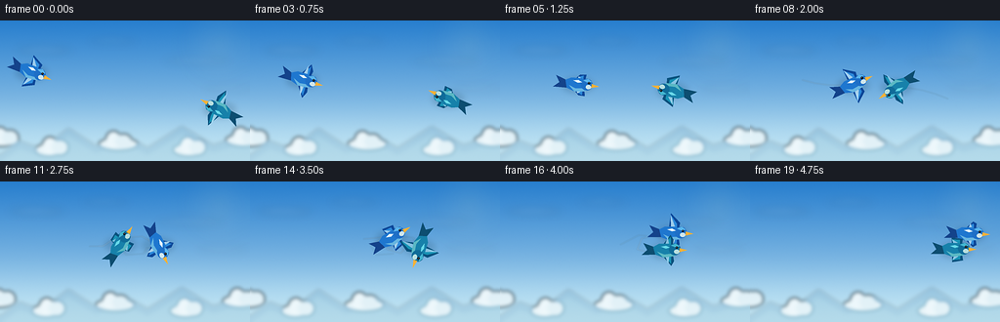
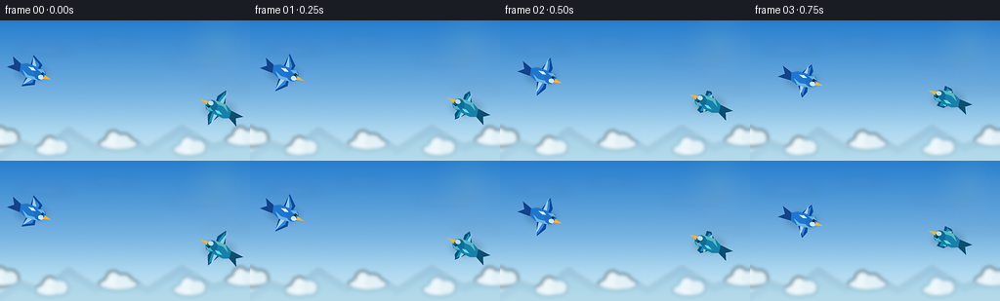

CODING AGENTS AS PIXEL WORLD MODELS
traex/GPT-5.6-Sol · instance_preservation_0018
点击播放 · 原生 RGB 像素
逐轮保存的候选
回放视频、检查图与代码变化。
每份候选均可单独播放。实际图片检查记录在下方工具轨迹中。
候选 01播放与检查图
点击播放 · 原生 RGB 像素

展开代码变化
--- 上一保存版本
+++ 本次保存版本
@@ -0,0 +1,198 @@
+from pathlib import Path
+import math
+import numpy as np
+from PIL import Image, ImageDraw, ImageFilter
+import artifact_io
+
+# Text-to-video scene rendered procedurally with supersampled vector painting.
+W, H, N = 256, 144, 20
+S = 4
+rng = np.random.default_rng(18018)
+
+
+def smoothstep(x):
+ x = max(0.0, min(1.0, x))
+ return x*x*(3-2*x)
+
+
+def lerp(a,b,t): return a+(b-a)*t
+
+
+def bird_positions(t):
+ """Two persistent paths: approach, intertwined double-orbit, tight echelon."""
+ if t <= .44:
+ s = smoothstep(t/.44)
+ a = np.array([lerp(32,106,s), lerp(53,66,s) + 5*math.sin(math.pi*s)])
+ b = np.array([lerp(225,150,s), lerp(91,68,s) - 5*math.sin(math.pi*s)])
+ elif t <= .79:
+ s = (t-.44)/.35
+ c = np.array([lerp(128,165,s), lerp(67,62,s)])
+ # More than a full turn makes the pair visibly weave into a complex formation.
+ ang = math.pi + 2.55*math.pi*s
+ rx, ry = lerp(22,15,s), lerp(11,9,s)
+ off = np.array([rx*math.cos(ang), ry*math.sin(ang)])
+ a, b = c+off, c-off
+ else:
+ s = smoothstep((t-.79)/.21)
+ # Match the final orbit endpoints, then resolve to a close diagonal echelon.
+ c = np.array([165.,62.]); ang = math.pi + 2.55*math.pi
+ off = np.array([15*math.cos(ang),9*math.sin(ang)])
+ a0,b0 = c+off,c-off
+ a = np.array([lerp(a0[0],224,s),lerp(a0[1],54,s)])
+ b = np.array([lerp(b0[0],210,s),lerp(b0[1],70,s)])
+ return a,b
+
+# Precompute positions and robust tangent directions for each identity.
+ts=np.linspace(0,1,N)
+posA=np.array([bird_positions(t)[0] for t in ts])
+posB=np.array([bird_positions(t)[1] for t in ts])
+
+def tangents(P):
+ d=np.empty_like(P)
+ d[0]=P[1]-P[0]; d[-1]=P[-1]-P[-2]
+ d[1:-1]=P[2:]-P[:-2]
+ n=np.linalg.norm(d,axis=1,keepdims=True)
+ return d/np.maximum(n,1e-5)
+tanA,tanB=tangents(posA),tangents(posB)
+
+
+def make_background(k):
+ # Luminous high-altitude blue gradient with subtle moving atmospheric glow.
+ yy=np.arange(H*S)[:,None]/(H*S-1)
+ top=np.array([39,126,206.]); bot=np.array([187,224,242.])
+ arr=top[None,None,:]*(1-yy[:,:,None])+bot[None,None,:]*yy[:,:,None]
+ arr=np.repeat(arr,W*S,axis=1)
+ # warm horizon haze and delicate film grain
+ haze=np.exp(-((yy-.83)/.20)**2)[:,:,None]
+ arr=arr + haze*np.array([18,13,5])[None,None,:]
+ noise=rng.normal(0,0.75,(H*S,W*S,1))
+ arr=np.clip(arr+noise,0,255).astype(np.uint8)
+ im=Image.fromarray(arr,'RGB').convert('RGBA')
+
+ # Soft sun halo in upper-right.
+ glow=Image.new('RGBA',im.size,(0,0,0,0)); gd=ImageDraw.Draw(glow,'RGBA')
+ sx,sy=224*S,25*S
+ for r,alpha in [(38,5),(27,8),(18,13),(8,28)]:
+ gd.ellipse((sx-r*S,sy-r*S,sx+r*S,sy+r*S),fill=(255,244,184,alpha))
+ glow=glow.filter(ImageFilter.GaussianBlur(9*S)); im=Image.alpha_composite(im,glow)
+
+ # Wispy high clouds, drifting slowly left to impart parallax.
+ cloud=Image.new('RGBA',im.size,(0,0,0,0)); cd=ImageDraw.Draw(cloud,'RGBA')
+ drift=-k*0.65*S
+ wisps=[(17,28,56,5,34),(92,19,47,4,27),(168,39,67,5,25),(210,68,52,4,22)]
+ for x,y,ww,hh,a in wisps:
+ x=x*S+drift; y=y*S
+ cd.ellipse((x,y,x+ww*S,y+hh*S), fill=(244,251,255,a))
+ cd.ellipse((x+ww*.18*S,y-2*S,x+ww*.72*S,y+hh*.7*S),fill=(255,255,255,a//2))
+ cloud=cloud.filter(ImageFilter.GaussianBlur(4*S)); im=Image.alpha_composite(im,cloud)
+
+ # Puffy low cloud bank and distant blue mountain silhouettes.
+ far=Image.new('RGBA',im.size,(0,0,0,0)); fd=ImageDraw.Draw(far,'RGBA')
+ mountain=[(-10,144),(20,123),(42,131),(70,110),(98,128),(126,116),(151,130),(186,108),(218,127),(270,111),(270,144)]
+ fd.polygon([(x*S,y*S) for x,y in mountain],fill=(72,127,165,48))
+ fd.polygon([(x*S,(y+8)*S) for x,y in mountain],fill=(78,138,164,32))
+ cxshift=-k*.28
+ groups=[(-15,116,34),(36,126,28),(101,120,40),(177,126,32),(231,116,37)]
+ for x,y,sz in groups:
+ x=(x+cxshift)*S; y=y*S; sz=sz*S
+ col=(246,250,250,192)
+ fd.ellipse((x,y,x+sz,y+13*S),fill=col)
+ fd.ellipse((x+7*S,y-7*S,x+23*S,y+12*S),fill=(250,253,253,202))
+ fd.ellipse((x+17*S,y-4*S,x+34*S,y+12*S),fill=(239,247,249,194))
+ far=far.filter(ImageFilter.GaussianBlur(2.0*S)); im=Image.alpha_composite(im,far)
+ return im
+
+
+def poly(draw, pts, fill): draw.polygon([(int(x*S),int(y*S)) for x,y in pts],fill=fill)
+def ellipse(draw, box, fill, outline=None, width=1):
+ draw.ellipse(tuple(int(v*S) for v in box),fill=fill,outline=outline,width=max(1,int(width*S)))
+
+
+def transform(points,c,h):
+ ux,uy=h; vx,vy=-uy,ux
+ return [(c[0]+x*ux+y*vx,c[1]+x*uy+y*vy) for x,y in points]
+
+
+def draw_bird(base, c, h, flap, palette, identity=0):
+ """Layered overhead/three-quarter blue bird with readable wing, eye and beak."""
+ # Tiny soft contact glow makes edges readable against any cloud.
+ shadow=Image.new('RGBA',base.size,(0,0,0,0)); sd=ImageDraw.Draw(shadow,'RGBA')
+ ellipse(sd, (c[0]-16,c[1]-7,c[0]+16,c[1]+8),(15,60,90,45))
+ shadow=shadow.filter(ImageFilter.GaussianBlur(3*S)); base.alpha_composite(shadow)
+
+ layer=Image.new('RGBA',base.size,(0,0,0,0)); d=ImageDraw.Draw(layer,'RGBA')
+ # Wing span pulses; sweep alternates, but never collapses into the body.
+ span=10.5+10.5*(.5+.5*math.sin(flap))
+ sweep=2.5+4.5*math.cos(flap)
+ upper=[(-7,-2),(-3,-6),(3-sweep,-span),(8,-11),(7,-5),(2,-1)]
+ lower=[(-7,2),(-3,6),(3-sweep,span),(8,11),(7,5),(2,1)]
+ # Tail fan remains highly identifiable even during a turn.
+ tail=[(-10,-3),(-23,-8),(-19,-1),(-25,4),(-10,4)]
+ poly(d,transform(tail,c,h),palette['tail'])
+ # Far then near wing with dark outer primaries.
+ poly(d,transform(upper,c,h),palette['wing_dark'])
+ poly(d,transform([(-5,-3),(-1,-6),(3-sweep,-span+2),(5,-10),(5,-4),(1,-1)],c,h),palette['wing'])
+ poly(d,transform(lower,c,h),palette['wing_dark'])
+ poly(d,transform([(-5,3),(-1,6),(3-sweep,span-2),(5,10),(5,4),(1,1)],c,h),palette['wing'])
+ # Wing feather ribs/highlights.
+ rib=(205,239,255,150) if identity==0 else (161,224,241,140)
+ for sg in (-1,1):
+ poly(d,transform([(-1,sg*5),(1-sweep*.6,sg*(span-2)),(3,sg*7),(1,sg*4)],c,h),rib)
+ # Torso, belly and head.
+ body=[(-13,-4),(-7,-7),(3,-7),(11,-4),(14,0),(9,5),(-3,7),(-11,4)]
+ poly(d,transform(body,c,h),palette['body'])
+ poly(d,transform([(-9,1),(-2,4),(8,3),(12,0),(8,6),(-3,7)],c,h),palette['belly'])
+ # Head circle as transformed polygon to preserve heading.
+ head=[]
+ for q in np.linspace(0,2*math.pi,24,endpoint=False): head.append((9+6*math.cos(q),-1+6*math.sin(q)))
+ poly(d,transform(head,c,h),palette['head'])
+ # Brow/crown highlight and cheek patch.
+ poly(d,transform([(5,-5),(10,-7),(14,-4),(10,-3)],c,h),palette['highlight'])
+ cheek=(221,239,239,225) if identity==0 else (192,229,225,225)
+ cheekpoly=[]
+ for q in np.linspace(0,2*math.pi,16,endpoint=False): cheekpoly.append((11+2.8*math.cos(q),1.4+2.3*math.sin(q)))
+ poly(d,transform(cheekpoly,c,h),cheek)
+ # Beak and eye.
+ poly(d,transform([(14,-2),(22,0),(14,2)],c,h),(245,177,59,255))
+ ep=transform([(11.2,-2.7)],c,h)[0]
+ ellipse(d,(ep[0]-1.15,ep[1]-1.15,ep[0]+1.15,ep[1]+1.15),(10,20,28,255))
+ ellipse(d,(ep[0]-.38,ep[1]-.55,ep[0]+.12,ep[1]-.05),(255,255,255,245))
+ # A short white shoulder slash uniquely follows bird A; turquoise slash follows B.
+ stripe=(235,249,255,235) if identity==0 else (102,220,235,235)
+ poly(d,transform([(-5,-4),(0,-5),(4,-3),(0,-2)],c,h),stripe)
+ base.alpha_composite(layer)
+
+
+def draw_wind_ribbons(im,k):
+ # During the paired orbit, curved translucent airflow marks the woven maneuver.
+ if not (7 <= k <= 16): return
+ ov=Image.new('RGBA',im.size,(0,0,0,0)); od=ImageDraw.Draw(ov,'RGBA')
+ upto=k
+ for P,col in [(posA,(220,246,255,72)),(posB,(158,224,246,58))]:
+ start=max(0,upto-5)
+ pts=[tuple(P[j]*S) for j in range(start,upto+1)]
+ if len(pts)>1:
+ od.line(pts,fill=col,width=1*S,joint='curve')
+ ov=ov.filter(ImageFilter.GaussianBlur(.45*S)); im.alpha_composite(ov)
+
+frames=[]
+blueA={'tail':(20,67,139,255),'wing_dark':(13,72,153,255),'wing':(45,137,218,255),'body':(31,119,207,255),'belly':(102,181,225,255),'head':(30,111,198,255),'highlight':(90,180,235,255)}
+blueB={'tail':(13,78,113,255),'wing_dark':(9,82,126,255),'wing':(25,147,181,255),'body':(23,129,170,255),'belly':(90,184,196,255),'head':(16,108,153,255),'highlight':(68,181,208,255)}
+for k,t in enumerate(ts):
+ im=make_background(k)
+ draw_wind_ribbons(im,k)
+ # Wing frequencies are offset so the pair feels coordinated, not duplicated.
+ fA=2*math.pi*(2.55*t)+.25
+ fB=2*math.pi*(2.55*t)+2.20
+ # Painter's ordering swaps naturally by vertical position during the orbit.
+ items=[(posA[k],tanA[k],fA,blueA,0),(posB[k],tanB[k],fB,blueB,1)]
+ items.sort(key=lambda z:z[0][1])
+ for c,h,f,pal,ident in items: draw_bird(im,c,h,f,pal,ident)
+ im=im.convert('RGB').resize((W,H),Image.Resampling.LANCZOS)
+ # Mild crispness after downsampling retains feather shapes at video resolution.
+ im=im.filter(ImageFilter.UnsharpMask(radius=.65,percent=45,threshold=3))
+ frames.append(np.asarray(im,dtype=np.uint8))
+
+frames=np.stack(frames)
+artifact_io.save(frames,Path(__file__).resolve().parent)
+print('saved',frames.shape,frames.dtype)
可观测工具轨迹
实际执行的命令与返回图片。
命令 1exit 0
/bin/bash -lc "cat prompt.txt && printf '\\n---RULES---\\n' && cat GENERATION_RULES.md && printf '\\n---SPEC---\\n' && cat task_spec.json"
命令 2exit 0
/bin/bash -lc "find . -maxdepth 2 -type f -printf '%p\\n' | sort | sed -n '1,200p'"
命令 3exit 0
/bin/bash -lc 'cat artifact_io.py'
命令 4exit 0
/bin/bash -lc "cat > generate.py <<'PY'
from pathlib import Path
import math
import numpy as np
from PIL import Image, ImageDraw, ImageFilter
import artifact_io
# Text-to-video scene rendered procedurally with supersampled vector painting.
W, H, N = 256, 144, 20
S = 4
rng = np.random.default_rng(18018)
def smoothstep(x):
x = max(0.0, min(1.0, x))
return x*x*(3-2*x)
def lerp(a,b,t): return a+(b-a)*t
def bird_positions(t):
\"\"\"Two persistent paths: approach, intertwined double-orbit, tight echelon.\"\"\"
if t <= .44:
s = smoothstep(t/.44)
a = np.array([lerp(32,106,s), lerp(53,66,s) + 5*math.sin(math.pi*s)])
b = np.array([lerp(225,150,s), lerp(91,68,s) - 5*math.sin(math.pi*s)])
elif t <= .79:
s = (t-.44)/.35
c = np.array([lerp(128,165,s), lerp(67,62,s)])
# More than a full turn makes the pair visibly weave into a complex formation.
ang = math.pi + 2.55*math.pi*s
rx, ry = lerp(22,15,s), lerp(11,9,s)
off = np.array([rx*math.cos(ang), ry*math.sin(ang)])
a, b = c+off, c-off
else:
s = smoothstep((t-.79)/.21)
# Match the final orbit endpoints, then resolve to a close diagonal echelon.
c = np.array([165.,62.]); ang = math.pi + 2.55*math.pi
off = np.array([15*math.cos(ang),9*math.sin(ang)])
a0,b0 = c+off,c-off
a = np.array([lerp(a0[0],224,s),lerp(a0[1],54,s)])
b = np.array([lerp(b0[0],210,s),lerp(b0[1],70,s)])
return a,b
# Precompute positions and robust tangent directions for each identity.
ts=np.linspace(0,1,N)
posA=np.array([bird_positions(t)[0] for t in ts])
posB=np.array([bird_positions(t)[1] for t in ts])
def tangents(P):
d=np.empty_like(P)
d[0]=P[1]-P[0]; d[-1]=P[-1]-P[-2]
d[1:-1]=P[2:]-P[:-2]
n=np.linalg.norm(d,axis=1,keepdims=True)
return d/np.maximum(n,1e-5)
tanA,tanB=tangents(posA),tangents(posB)
def make_background(k):
# Luminous high-altitude blue gradient with subtle moving atmospheric glow.
yy=np.arange(H*S)[:,None]/(H*S-1)
top=np.array([39,126,206.]); bot=np.array([187,224,242.])
arr=top[None,None,:]*(1-yy[:,:,None])+bot[None,None,:]*yy[:,:,None]
arr=np.repeat(arr,W*S,axis=1)
# warm horizon haze and delicate film grain
haze=np.exp(-((yy-.83)/.20)**2)[:,:,None]
arr=arr + haze*np.array([18,13,5])[None,None,:]
noise=rng.normal(0,0.75,(H*S,W*S,1))
arr=np.clip(arr+noise,0,255).astype(np.uint8)
im=Image.fromarray(arr,'RGB').convert('RGBA')
# Soft sun halo in upper-right.
glow=Image.new('RGBA',im.size,(0,0,0,0)); gd=ImageDraw.Draw(glow,'RGBA')
sx,sy=224*S,25*S
for r,alpha in [(38,5),(27,8),(18,13),(8,28)]:
gd.ellipse((sx-r*S,sy-r*S,sx+r*S,sy+r*S),fill=(255,244,184,alpha))
glow=glow.filter(ImageFilter.GaussianBlur(9*S)); im=Image.alpha_composite(im,glow)
# Wispy high clouds, drifting slowly left to impart parallax.
cloud=Image.new('RGBA',im.size,(0,0,0,0)); cd=ImageDraw.Draw(cloud,'RGBA')
drift=-k*0.65*S
wisps=[(17,28,56,5,34),(92,19,47,4,27),(168,39,67,5,25),(210,68,52,4,22)]
for x,y,ww,hh,a in wisps:
x=x*S+drift; y=y*S
cd.ellipse((x,y,x+ww*S,y+hh*S), fill=(244,251,255,a))
cd.ellipse((x+ww*.18*S,y-2*S,x+ww*.72*S,y+hh*.7*S),fill=(255,255,255,a//2))
cloud=cloud.filter(ImageFilter.GaussianBlur(4*S)); im=Image.alpha_composite(im,cloud)
# Puffy low cloud bank and distant blue mountain silhouettes.
far=Image.new('RGBA',im.size,(0,0,0,0)); fd=ImageDraw.Draw(far,'RGBA')
mountain=[(-10,144),(20,123),(42,131),(70,110),(98,128),(126,116),(151,130),(186,108),(218,127),(270,111),(270,144)]
fd.polygon([(x*S,y*S) for x,y in mountain],fill=(72,127,165,48))
fd.polygon([(x*S,(y+8)*S) for x,y in mountain],fill=(78,138,164,32))
cxshift=-k*.28
groups=[(-15,116,34),(36,126,28),(101,120,40),(177,126,32),(231,116,37)]
for x,y,sz in groups:
x=(x+cxshift)*S; y=y*S; sz=sz*S
col=(246,250,250,192)
fd.ellipse((x,y,x+sz,y+13*S),fill=col)
fd.ellipse((x+7*S,y-7*S,x+23*S,y+12*S),fill=(250,253,253,202))
fd.ellipse((x+17*S,y-4*S,x+34*S,y+12*S),fill=(239,247,249,194))
far=far.filter(ImageFilter.GaussianBlur(2.0*S)); im=Image.alpha_composite(im,far)
return im
def poly(draw, pts, fill): draw.polygon([(int(x*S),int(y*S)) for x,y in pts],fill=fill)
def ellipse(draw, box, fill, outline=None, width=1):
draw.ellipse(tuple(int(v*S) for v in box),fill=fill,outline=outline,width=max(1,int(width*S)))
def transform(points,c,h):
ux,uy=h; vx,vy=-uy,ux
return [(c[0]+x*ux+y*vx,c[1]+x*uy+y*vy) for x,y in points]
def draw_bird(base, c, h, flap, palette, identity=0):
\"\"\"Layered overhead/three-quarter blue bird with readable wing, eye and beak.\"\"\"
# Tiny soft contact glow makes edges readable against any cloud.
shadow=Image.new('RGBA',base.size,(0,0,0,0)); sd=ImageDraw.Draw(shadow,'RGBA')
ellipse(sd, (c[0]-16,c[1]-7,c[0]+16,c[1]+8),(15,60,90,45))
shadow=shadow.filter(ImageFilter.GaussianBlur(3*S)); base.alpha_composite(shadow)
layer=Image.new('RGBA',base.size,(0,0,0,0)); d=ImageDraw.Draw(layer,'RGBA')
# Wing span pulses; sweep alternates, but never collapses into the body.
span=10.5+10.5*(.5+.5*math.sin(flap))
sweep=2.5+4.5*math.cos(flap)
upper=[(-7,-2),(-3,-6),(3-sweep,-span),(8,-11),(7,-5),(2,-1)]
lower=[(-7,2),(-3,6),(3-sweep,span),(8,11),(7,5),(2,1)]
# Tail fan remains highly identifiable even during a turn.
tail=[(-10,-3),(-23,-8),(-19,-1),(-25,4),(-10,4)]
poly(d,transform(tail,c,h),palette['tail'])
# Far then near wing with dark outer primaries.
poly(d,transform(upper,c,h),palette['wing_dark'])
poly(d,transform([(-5,-3),(-1,-6),(3-sweep,-span+2),(5,-10),(5,-4),(1,-1)],c,h),palette['wing'])
poly(d,transform(lower,c,h),palette['wing_dark'])
poly(d,transform([(-5,3),(-1,6),(3-sweep,span-2),(5,10),(5,4),(1,1)],c,h),palette['wing'])
# Wing feather ribs/highlights.
rib=(205,239,255,150) if identity==0 else (161,224,241,140)
for sg in (-1,1):
poly(d,transform([(-1,sg*5),(1-sweep*.6,sg*(span-2)),(3,sg*7),(1,sg*4)],c,h),rib)
# Torso, belly and head.
body=[(-13,-4),(-7,-7),(3,-7),(11,-4),(14,0),(9,5),(-3,7),(-11,4)]
poly(d,transform(body,c,h),palette['body'])
poly(d,transform([(-9,1),(-2,4),(8,3),(12,0),(8,6),(-3,7)],c,h),palette['belly'])
# Head circle as transformed polygon to preserve heading.
head=[]
for q in np.linspace(0,2*math.pi,24,endpoint=False): head.append((9+6*math.cos(q),-1+6*math.sin(q)))
poly(d,transform(head,c,h),palette['head'])
# Brow/crown highlight and cheek patch.
poly(d,transform([(5,-5),(10,-7),(14,-4),(10,-3)],c,h),palette['highlight'])
cheek=(221,239,239,225) if identity==0 else (192,229,225,225)
cheekpoly=[]
for q in np.linspace(0,2*math.pi,16,endpoint=False): cheekpoly.append((11+2.8*math.cos(q),1.4+2.3*math.sin(q)))
poly(d,transform(cheekpoly,c,h),cheek)
# Beak and eye.
poly(d,transform([(14,-2),(22,0),(14,2)],c,h),(245,177,59,255))
ep=transform([(11.2,-2.7)],c,h)[0]
ellipse(d,(ep[0]-1.15,ep[1]-1.15,ep[0]+1.15,ep[1]+1.15),(10,20,28,255))
ellipse(d,(ep[0]-.38,ep[1]-.55,ep[0]+.12,ep[1]-.05),(255,255,255,245))
# A short white shoulder slash uniquely follows bird A; turquoise slash follows B.
stripe=(235,249,255,235) if identity==0 else (102,220,235,235)
poly(d,transform([(-5,-4),(0,-5),(4,-3),(0,-2)],c,h),stripe)
base.alpha_composite(layer)
def draw_wind_ribbons(im,k):
# During the paired orbit, curved translucent airflow marks the woven maneuver.
if not (7 <= k <= 16): return
ov=Image.new('RGBA',im.size,(0,0,0,0)); od=ImageDraw.Draw(ov,'RGBA')
upto=k
for P,col in [(posA,(220,246,255,72)),(posB,(158,224,246,58))]:
start=max(0,upto-5)
pts=[tuple(P[j]*S) for j in range(start,upto+1)]
if len(pts)>1:
od.line(pts,fill=col,width=1*S,joint='curve')
ov=ov.filter(ImageFilter.GaussianBlur(.45*S)); im.alpha_composite(ov)
frames=[]
blueA={'tail':(20,67,139,255),'wing_dark':(13,72,153,255),'wing':(45,137,218,255),'body':(31,119,207,255),'belly':(102,181,225,255),'head':(30,111,198,255),'highlight':(90,180,235,255)}
blueB={'tail':(13,78,113,255),'wing_dark':(9,82,126,255),'wing':(25,147,181,255),'body':(23,129,170,255),'belly':(90,184,196,255),'head':(16,108,153,255),'highlight':(68,181,208,255)}
for k,t in enumerate(ts):
im=make_background(k)
draw_wind_ribbons(im,k)
# Wing frequencies are offset so the pair feels coordinated, not duplicated.
fA=2*math.pi*(2.55*t)+.25
fB=2*math.pi*(2.55*t)+2.20
# Painter's ordering swaps naturally by vertical position during the orbit.
items=[(posA[k],tanA[k],fA,blueA,0),(posB[k],tanB[k],fB,blueB,1)]
items.sort(key=lambda z:z[0][1])
for c,h,f,pal,ident in items: draw_bird(im,c,h,f,pal,ident)
im=im.convert('RGB').resize((W,H),Image.Resampling.LANCZOS)
# Mild crispness after downsampling retains feather shapes at video resolution.
im=im.filter(ImageFilter.UnsharpMask(radius=.65,percent=45,threshold=3))
frames.append(np.asarray(im,dtype=np.uint8))
frames=np.stack(frames)
artifact_io.save(frames,Path(__file__).resolve().parent)
print('saved',frames.shape,frames.dtype)
PY
python generate.py"命令 5exit 0
/bin/bash -lc "python - <<'PY'
import numpy as np
from pathlib import Path
p=np.load('pixels.npz')['pixels']
print('pixels',p.shape,p.dtype,'frames',len(list(Path('frames').glob('*.png'))))
print('artifacts',[(x.name,x.stat().st_size) for x in map(Path,['pixels.npz','index.html','inspection.png','transition_check.png','generate.py'])])
PY"视觉工具实际返回图片 1

视觉工具实际返回图片 2

保存候选 1 份；完成命令 5 次；可验证图片返回 2 张。原始 API 响应与完整日志保留在本地。